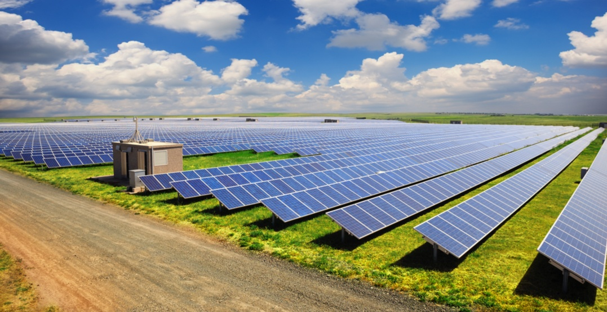
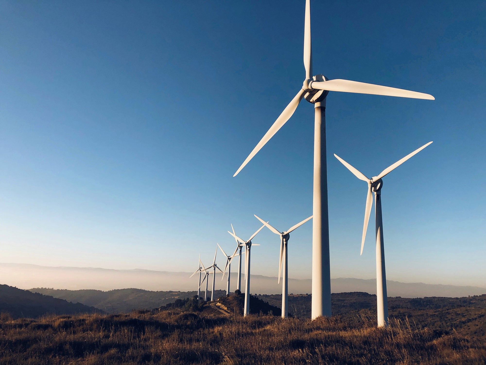

This map shows the potential for solar and wind power production across the United States. It can be helpful in deciding the best areas of the country to put solar power fields or wind farms.
This map shows the locations of solar and nuclear power plants in the United States. The size of each circle represents the MW output of energy from each plant. Nuclear power plants have a much higher MW output than solar power plants. The Nuclear power plants are shown with the red circles and the solar plants are shown with the orange circles.
This map shows the energy consumption of each state per capita. This means the amount of energy a person uses in a year. The highest consumption rates shown were in Louisana, which came in at 960 million Btu. In comparison, the world average per capita consumption was 77 Btu.
This map illustrates where wind turbines are located in the United States. The midwest has very high quantities of wind turbines. This correlates to the wind power potential map seen above.
